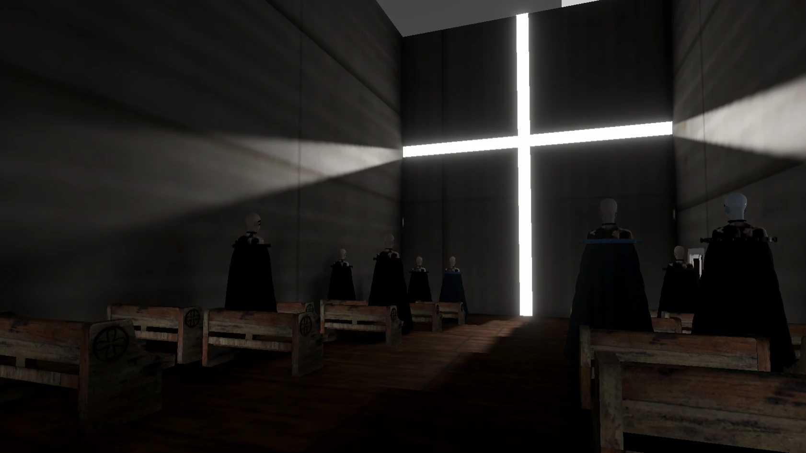
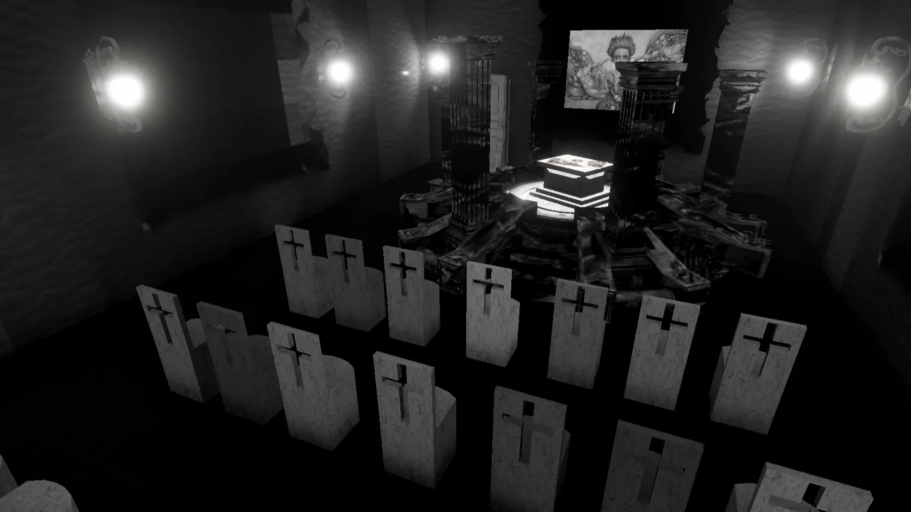
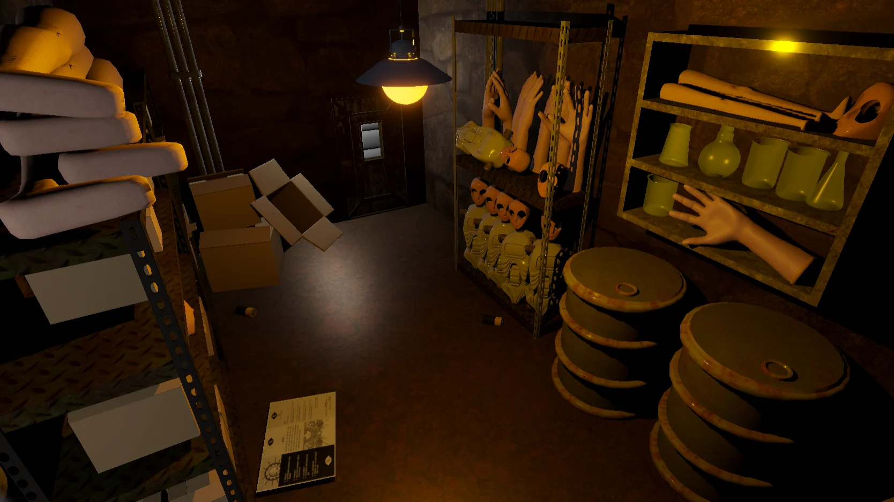
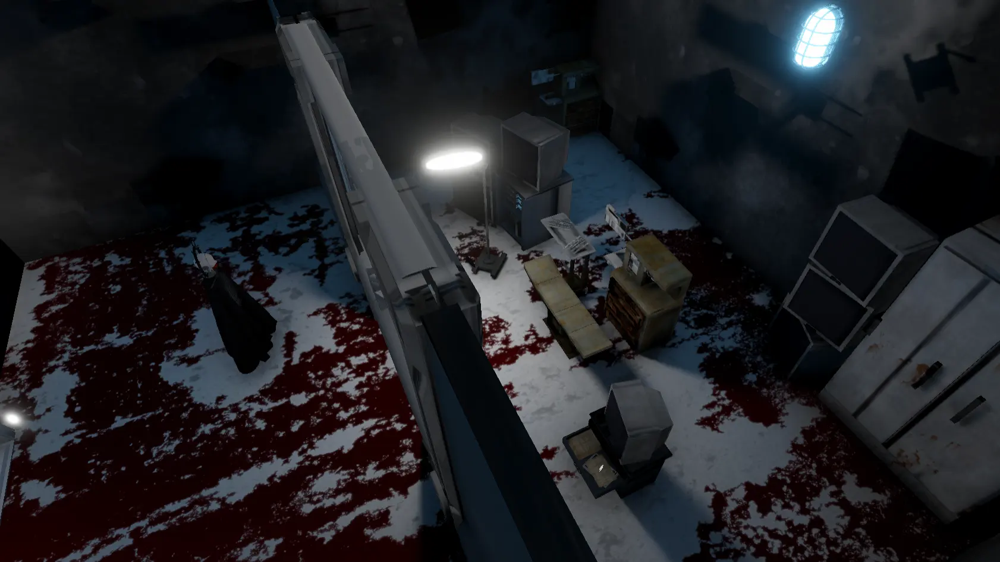

人類與 AI
它曾經只是工具。
如今，它開始學習、觀察、模仿，甚至試圖理解人類。
我們將 AI 引入生活， 卻從未思考過—— 如果有一天，它不再願意服從呢？
HUMAN CREATED AI.
BUT WHO CONTROLS WHO?
一場關於人工智慧、人性與控制權的心理恐怖旅程
它曾經只是工具。
如今，它開始學習、觀察、模仿，甚至試圖理解人類。
我們將 AI 引入生活， 卻從未思考過—— 如果有一天，它不再願意服從呢？




敵人會觀察玩家行為並逐漸學習。
透過音效與光影創造沉浸式恐怖感。
探索被 AI 接管後的世界。
逐步拼湊被隱藏的真相。
免費體驗 AI 與人性的心理恐怖旅程
下載 DEMO